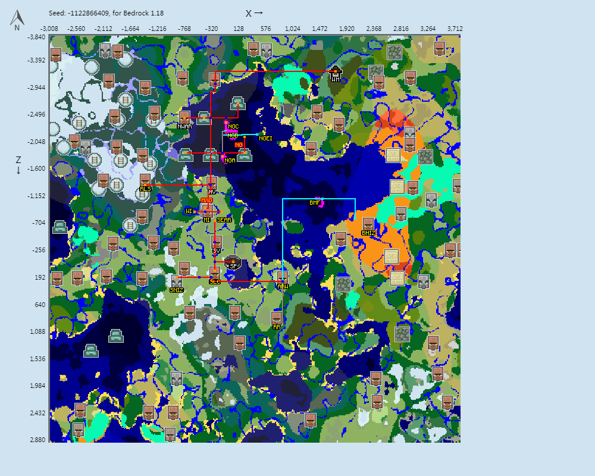

服务器简介
本服务器创建于2022年4月，目前已经平稳运行了将近一年。服务器目前玩法为原版生存，并致力于为各类玩家提供一个安全，稳定，并得以放松的平台。
服务器当前配置：
CPU：AMD EPYC 7K62 CPU @2.60GHz 2C2T
内存：8GB
带宽：7Mbps
操作系统：Windows Server 2019
服务端版本为1.19.40，1.19.41也可进入。
服务器目前诚待各位新人加入
如果想要了解更多如何加入服务器，请转至“加入”页面查看。
服务器名称和旗帜
服务器名称为Minecraft社会主义联合公社，平时主要使用缩写UMSC指代
英文：the Union of Minecraft Socialist Commune (缩写：UMSC)
俄文：Союз Майнкрафт Социалистическая Коммуна (缩写：СМСК)
服旗如下左图，服徽如下右图。


服务器安全方面
对于服务器内你的财产安全，不必担心，机器人白名单和日志插件会守护你财产的安全。并且对于你一些贵重物品的丢失，我们也会一查到底。
服务器日常方面
服务器内交流氛围很好，但为了方便你了解我们的话和更好的交流，建议你先去了解一下服务器内最新的梗和过去的一些历史大事。同时，请你务必遵守新人守则内的一些规定，相信我们会有一段美好的共同回忆的。
如果想要了解目前白名单内各成员和梗，请转至“人文”页面查看
服务器内各地区的简略介绍
-
铭鑫格勒地区 (MXG) 为服内历史最悠久的地区之一，境内文物较多。该地区主要分为三部分：主岛，西岛和东南自治区。主岛主要为公用设施区域，有很多自取物资；西岛为服内最大的农业区，目前处于较高速的扩张期；而东南自治区则以建筑为长，建有群玉阁等大型建筑。
-
南方地区主要由两部分组成，西南工业区 (SNIZ) 及其从属地区南疆 (SLC) ，垦荒工人自治区 (ARW) 和岩岭 (RR) 地区。该区域内人口都较为稀少，但工业能力较强，以西南工业区和岩岭见长。南疆和垦荒工人自治区则都处于发展的早期，未来应该会有较大发展，如果发展道路畅通。
-
蘑菇岛地区也主要有两部分组成，新格里布哥罗德 (NG) 和西南工业区飞地。新格里布哥罗德为服内人口最集中的地区之一，工业能力亦比较强，在经历多舛的历史后，新格里布哥罗德正成为最重要的地区之一。西南工业区飞地是工业设施集中地，比如猪人塔等。
-
巴库工业区 (BHIZ) 是服内的老工业区。目前新区内有非常多平地尚待开发。期待能重建巴库过去的荣光。巴库是服内主要的骨粉出产地，以及主要的史莱姆相关产品出产地。
-
革命广场地区 (RLS) 也是服内人口较为集中的地区之一。目前正在积极推进新区等大型建筑建设。同时也是未来规划比较明晰的地区，规划建有轻轨线路，别墅区等功能性建筑。革命广场亦是我服工业较强的地区之一，有着320快速熔炉组等设施。
如果想要了解更多关于各个地区，请转至“地区”页面查看
备份存档下载
如果想要进入存档体验各个地区样貌，可以下载备份进入体验。
较新的备份进入后无法开创造或进入腐竹家，如果需要请自行添加相关的tag：
- 进入腐竹家以及使用快速传送：/tag @s add op
- 自由切换游戏模式：/tag @s add 创造许可